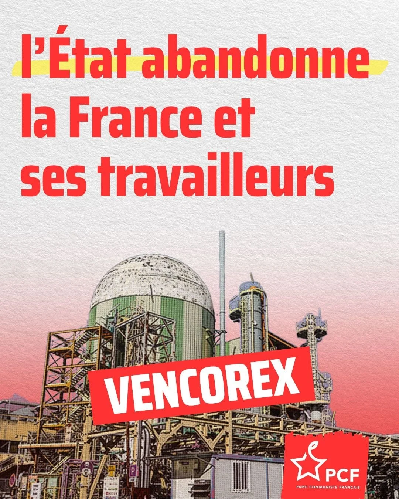

Publication relayée par le PCF 79
Le PCF réagit à la décision du tribunal sur Vencorex
Date de mise à jour indiquée par Facebook · 11 avril 2025
Texte de la publication · PCF national
Vencorex bradé, la filière chimie menacée
Le tribunal de commerce de Lyon a tranché : l’offre d’un groupe chinois (via sa filiale hongroise) est retenue.
Résultat : seuls 54 emplois sauvés, des centaines promis au licenciement.
Pourtant, les salarié·es, appuyés par la CGT, des élu·es locaux et des industriels, portaient un vrai projet de reprise via une SCIC : pour maintenir l’activité, garantir notre souveraineté industrielle et sauver plus de 400 emplois sur la plateforme.
Le gouvernement tourne le dos à ce projet d’avenir, au profit d’un repreneur étranger intéressé surtout… par les brevets !
Vencorex est un maillon stratégique de la filière chimie, liée au nucléaire, à l’aéronautique, à la défense. Abandonner ce site, c’est fragiliser tout un pan de l’économie et de la souveraineté française.
Nous exigeons l’arrêt du processus en cours et le soutien immédiat au projet de reprise porté par les salarié·es !
Le PCF se tient aux côtés de celles et ceux qui se battent pour l’emploi, l’industrie, la souveraineté.
#Vencorex #Industrie #SouverainetéIndustrielle #Emplois #PCF #CGT #Solidarité #PontDeClaix #Jarrie #Chimie #FabienRoussel #SCIC #Économie

Sources
PCF national · publication relayée par le PCF 79 · bibliothèque Facebook · AR-0002-FB-01148
À lire aussi · À Parthenay, solidarité avec les militants convoqués à la gendarmerie · Le lien d’origine